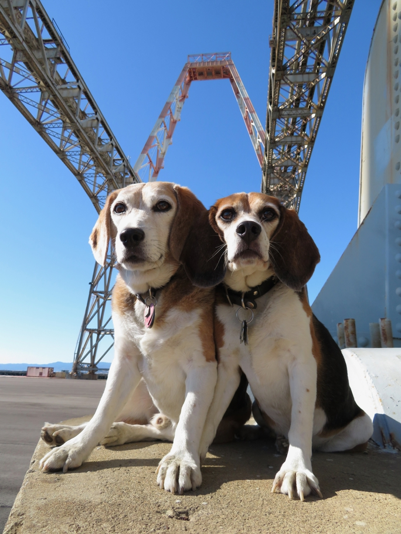

<--Previous Up Next-->

At the heart of the Hunters Point Naval Reservation. The red and white structure atop the gantry crane was used to catch missiles after test firings.
Huxley Beagle sanfrancisco Wallace Beagle